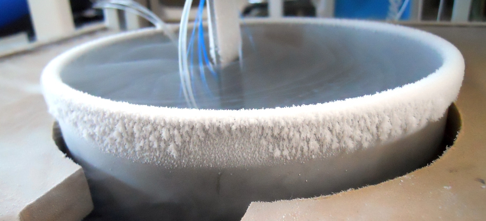
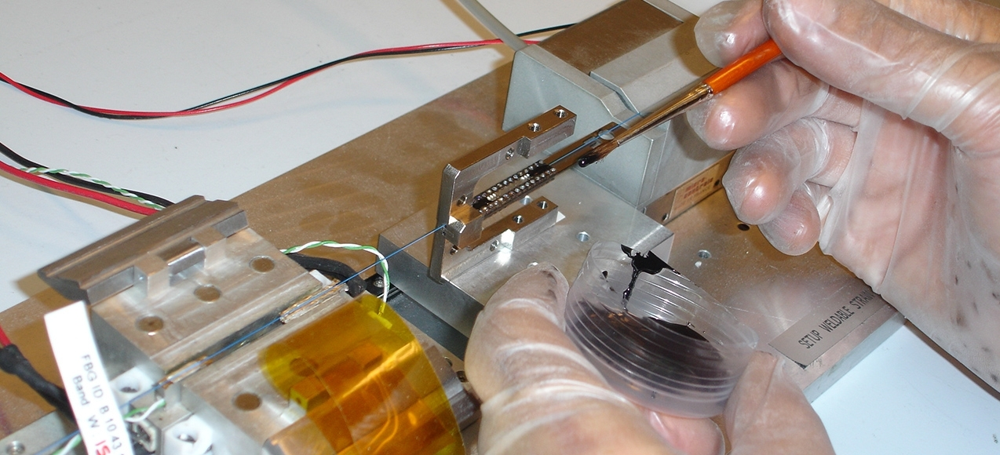
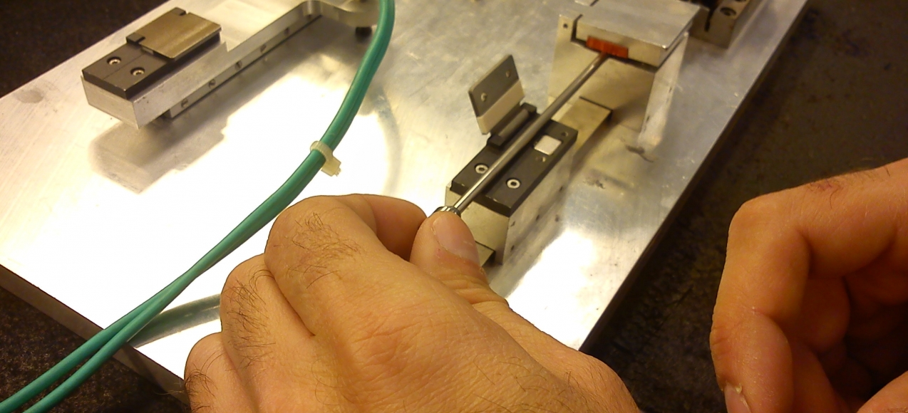

ITER
Optical Sensors for ITER Fusion Experiment
The consortium composed of Smartec and FiberSensing won the tender to provide Optical Sensors based on FBG (Fiber Bragg Grating) technology and Fabry-Perot interferometers to ITER - International Fusion Energy Organization - project for fusion.
The ITER fusion project is a large-scale scientific experiment that aims at developing a new, cleaner, sustainable source of energy, by producing commercial energy from fusion - the process that occurs at the core of the Sun.
Strain, temperature and displacement monitoring in cryogenic.
- 
- 
- 
Qualification and supply of optical sensing systems for superconducting magnets
The contract with ITER concerns the qualification and supply of optical sensing systems to measure strain, displacement and temperature in the cryogenic environment found in the ITER Thermonuclear Experimental Reactor's magnets. This contract adds to a previous order of ITER to Smartec to supply laser distance meters for the same application.
The companies will provide strain, displacement and temperature optical sensors to be installed on coils and on different mechanical structures. The first phase of the work includes the adaptation and qualification of sensors, measurement units and software for the particular constraints of the ITER superconducting magnets. A second phase will consist of series production, delivery and installation of the sensing systems, which is foreseen to happen this year. In total, the two contracts foresee the delivery of approximately 500 to 900 sensors and the related data acquisition systems, as well as complementary accessories such as cables and software.
Main phases of supply contract between the consortium Smartec and FiberSensing, and ITER:
- Phase 1 — Sensors Development
- Phase 2 — Sensors Test and Qualification on the following Environments: High Radiation; High Vacuum; Cryogenic - Liquid Helium Temperatures
- Phase 3 — Sensors Industrialization
About ITER
Every second, our Sun turns 600 million tons of Hydrogen into Helium, releasing an enormous amount of energy. In ITER, the fusion reaction will be achieved in a Tokamak device, a next generation fusion machine that uses magnetic fields, including large super- conducting magnets, to contain and control the hot plasma. The fusion between Deuterium and Tritium (D-T) will produce one Helium nuclei, one neutron and energy. The energy will be then transformed into heat, which will be used to produce steam and - by way of turbines and alternators – electricity.
The purpose of ITER is to establish one of the largest and most ambitious international science projects ever conducted with the contribution of its seven international Members.
For more information, visit: www.iter.org.
Technical Data
| Parameters | Range | Number of Sensors |
|---|---|---|
| Strain | 0-10k micro strain | 200 |
| Small Displacements | ≤ 0,1-3 mm | 60 |
| Longe Range Displacements | 2-80 mm | 220 |
| Temperature | 4-300 K | 300 |
- +500 Sensors
- 4 ºk Minimum Temperature
- 10 -8 mbar Vaccum
- 5Mgreys Radiation Level